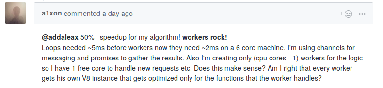
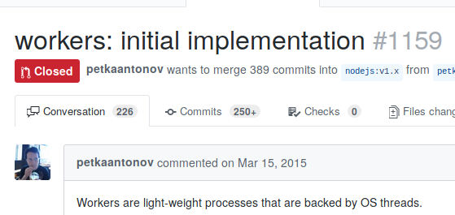
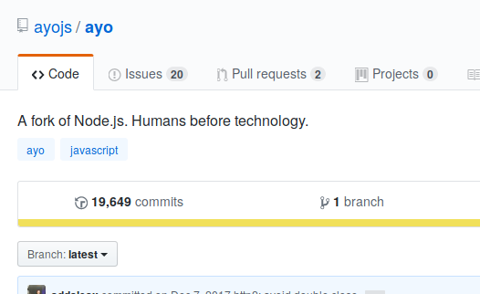
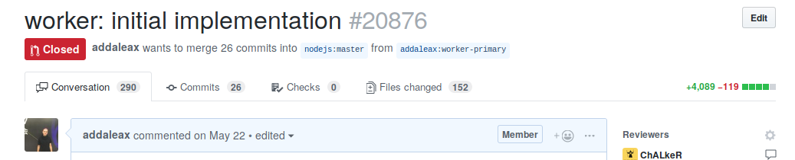
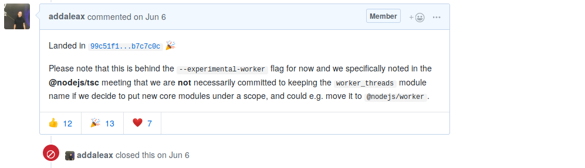
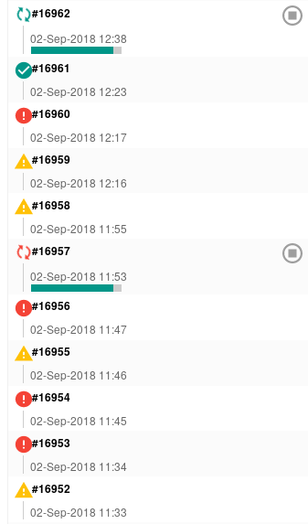
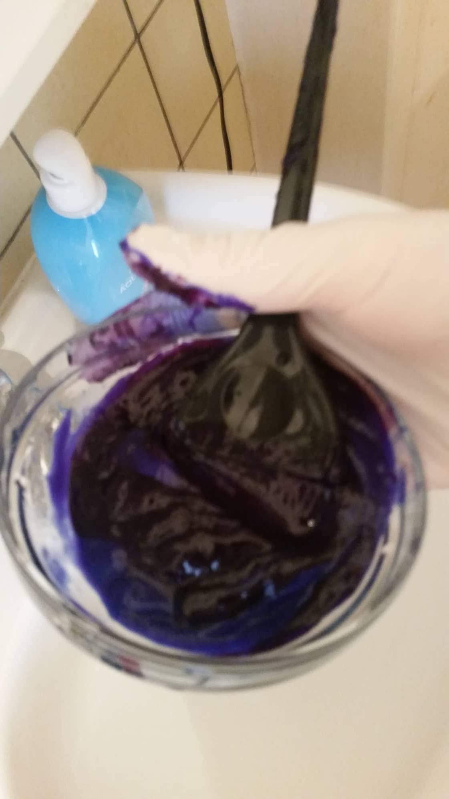

class: center, middle # Node.js: The Road to Workers Anna Henningsen <br /> she/her <br /> @addaleax <br /> Node.js TSC <br /> Active Node.js contributor since December 2015 <br /> --- name: how-did-i # How did I get into Node.js core? ```js setTimeout(1000, 1000, function() { console.log('hi!'); }); ``` --- template: how-did-i (don’t ask me why) ``` > TypeError: callback.call is not a function at ontimeout [as _onTimeout] (timers.js:195:34) at Timer.listOnTimeout (timers.js:92:15) ``` --- template: how-did-i ```diff @@ -177,6 +177,10 @@ exports.enroll = function(item, msecs) { exports.setTimeout = function(callback, after) { + if (typeof callback !== 'function') { + throw new TypeError('"callback" argument must be a function'); + } + after *= 1; // coalesce to number or NaN if (!(after >= 1 && after <= TIMEOUT_MAX)) { ``` --- # Why am I talking about this? - I didn’t know much about what was happening inside Node.js - A lot of people in the ~~community~~ ecosystem don’t -- - There’s a hidden world here --- class: center, middle <!-- https://github.com/nodejs/worker/issues/4#issuecomment-417869749 -->  💖 If you like something, tell the people who made it 💖 --- # Backing up a little bit… <div style="float:right"> <div> </div> <!-- https://commons.wikimedia.org/wiki/File:Pebble_stack.jpg --> <span style="color:grey;font-size:50%">Image: © CC-BY 3.0 Zzubnik on Wikimedia Commons</span> </div> ## How is Node.js structured? - One Node.js application is … - One Process - One Thread* - One Event Loop - One JS Engine instance - One Node.js instance -- - None of this has to be that way! --- # What’s the problem <div style="float:right"> <div> </div> <!-- https://commons.wikimedia.org/wiki/File:Queue-to-the-Louvre.jpg --> <span style="color:grey;font-size:50%">Image: © CC-BY-SA 3.0 Edal on Wikimedia Commons</span> </div> - Typical Node.js application: *One* piece of code runs at a time - This makes life easy - Hogging the CPU keeps I/O from happening - CPU-heavy applications may have increased latency - The golden rule of Node.js performance: <br/> **<span style="color:gold;padding:10px">Don’t block the event loop</span>** --- # Existing solutions - Multiple processes - `cluster` API Drawbacks: - No shared memory - Communication over JSON Advantages: - More isolation, stability - Identical APIs --- # The solution: Worker threads <div id="workers-design-target"></div> - One Node.js application is … - One Process - **<span style="color: #aaaaff">Multiple</span> threads** - One event loop per thread - One JS engine instance per thread - One Node.js instance per thread --- # Implementation idea: <br /> Embed Node.js into itself <div style="float:left"> <div> </div> <!-- https://en.wikipedia.org/wiki/File:Klein_bottle.svg --> <span style="color:grey;font-size:50%">Image: © CC-BY-SA 3.0 Tttrung on Wikimedia Commons</span> </div> - Embedding is supported – in theory - In practice, before Node 10: *Eep*. - Lots of global state - Clean up resources on exit - CLI options are global --- # Prior art <div style="float:right"> <div> <!-- https://github.com/nodejs/node/pull/1159 -->  </div> </div> - 2 PRs by Petka Antonov - Mostly just stalled out due to lack of reviewers - Lightweight implementation à la WebWorkers by Audrey Tang (唐鳳) (https://github.com/audreyt/node-webworker-threads/) --- # A New Hope <div style="float:right"> <div> <!-- https://github.com/ayojs/ayo -->  </div> </div> - Around October 2017: Ayo.js, a fork of Node.js - Prime development ground for Worker support - Worked out a full threading implementation for Node.js --- # Porting to Node.js <!-- https://github.com/nodejs/node/pull/20876 -->   --- # Porting to Node.js <div style="float:right"> <div> </div> <!-- https://www.flickr.com/photos/12495154@N03/2832113715/ --> <span style="color:grey;font-size:50%">Image: © CC-BY 2.0 Ragnar Singsaas</span> </div> - Major issues: - Windows support blocked workers for 2+ months - npm package name `worker` unavailable - New module: Scoped name à la `@nodejs/workers`? - Surprisingly, less issues with review for the main PR - Available in Node 10! 🎉 --- # The result <style> .nitem { color: white; border: 2px solid white; border-radius: 5px; padding: 4px; margin: 4px; width: 25%; text-align: center; white-space: nowrap; } </style> <div style="float:right" id="workers-design"> <table style="border-spacing: 5px"> <tr class="ngroup"> <td class="nitem" colspan="2">Your code</td> <td class="nitem" colspan="2">Your code</td> <td class="nitem" colspan="2">Your code</td> </tr> <tr class="ngroup"> <td class="nitem" colspan="2">Node.js</td> <td class="nitem" colspan="2">Node.js</td> <td class="nitem" colspan="2">Node.js</td> </tr> <tr class="ngroup"> <td class="nitem">V8</td><td class="nitem">libuv</td> <td class="nitem">V8</td><td class="nitem">libuv</td> <td class="nitem">V8</td><td class="nitem">libuv</td> </tr> <tr class="ngroup"> <td class="nitem" colspan="2">Thread</td> <td class="nitem" colspan="2">Thread</td> <td class="nitem" colspan="2">Thread</td> </tr> <tr class="ngroup"> <td class="nitem" colspan="6">Process</td> </tr> </table> </div> - Not quite the Web `Worker` API - `require()` works - Almost all Node.js core APIs work -- ## Communication - Transferring `ArrayBuffer`s works - `SharedArrayBuffer`s and `Atomics` work - `workerData` to pass startup data - `MessagePort`, `MessageChannel` close to the browser - Take care when using add-ons --- # Example ```js const { Worker } = require('worker_threads'); const worker = new Worker(` const { parentPort } = require('worker_threads'); parentPort.once('message', message => parentPort.postMessage({ pong: message })); // 2 `, { eval: true }); worker.on('message', message => console.log(message)); // 3 worker.postMessage('ping'); // 1 ``` ```sh $ node --experimental-worker test.js { pong: 'ping' } ``` --- # Example ```js const data = new Int32Array(new SharedArrayBuffer(32)); data[0] = 2016; const worker = new Worker(` const data = require('worker_threads').workerData; for (let i = 2; data[0] != 1; ++i) // Do the prime dance while (data[0] % i === 0) data[0] /= i, data[i]++; data[1] = 1; // Change data[1] and notify the main thread on it Atomics.notify(data, 1); `, { eval: true, workerData: data }); Atomics.wait(data, 1, 0); // Wait for the notify() call above console.log(data); ``` --- # Status - <span style="background-color: #ffaaaa; color: black; padding: 5px">Experimental</span> - We’re looking for feedback! - Do you have: Real world usage? Cool experimentation? - Web Locks API - Dev tools support! - `.terminate()` is kind of experimental-within-experimental -- ## Hopefully? - Passing native handles around (e.g. sockets) - Deadlock detection - More isolation? --- # Other approaches - Alibaba and Microsoft (Napa.js) have been working on similar things - 😲 Shared JS objects 😲 - Require Engine modifications -- # Please don’t … - … think this makes everything magically faster - … use this for parallelizing I/O - … think spawning workers is cheap (yet?) - About the same as for child processes - We’re working on it! - Generally: Use worker pools --- # What I typically do <div style="float:right;margin-left:20px">  </div> This week… - Catching up with PRs & Issues - Trying to get green CI runs 😩 - Submitted PRs to fix flaky/slow tests - Fixed a bug (that I caused) in our streaming UTF-16 decoder - Refactored Node.js to have a proper options parser - Make `--help` output a bit more flexible in layout - Cleaning up more global state… - Maybe add CLI flags to Workers? --- # Finally: Heads up! <div style="float:right"> <!-- https://github.com/nodejs/Release --> <img src="schedule.png" style="height: 350px" /> </div> - Node 6 is supported until **April 2019** - Node 8 is supported until **December 2019** - Node 10 will become LTS in **October** (Workers! 🤩) - Node 11 will be released in **October** <div style="clear:both"> More @ <a href="https://github.com/nodejs/Release">https://github.com/nodejs/Release</a> </div> --- # Thank you! <div style="float:left;margin-right:100px">  </div> If you have any questions: <br /> Q&A room, or look for freshly dyed blue hair! Also: - https://twitter.com/addaleax/ - anna@addaleax.net - https://github.com/nodejs/help/ Slides @ https://addaleax.net/workers-nordicjs/